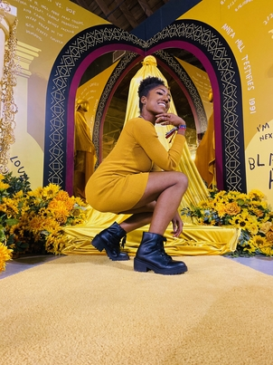

Mykaila Williams
Mykaila Williams (she/her) joins us from Miami FL and received her BFA from the University of Southern California in Film & Television Production. A champion for black scholarship and activism, she held roles at USC such as Director of Diversity Affairs and Black Student Assembly Director. In current day, Mykaila is a member of Delta Sigma Theta, Incorporated, a homie in The Homiez Collective, and Assistant Director of Outlast Arts & Education. Outside of those roles, Mykaila spends her time producing and DP'ing Black stories for the screen and generally building community. She is ecstatic to be working on Freedom and can’t wait to see what this journey will bring.
